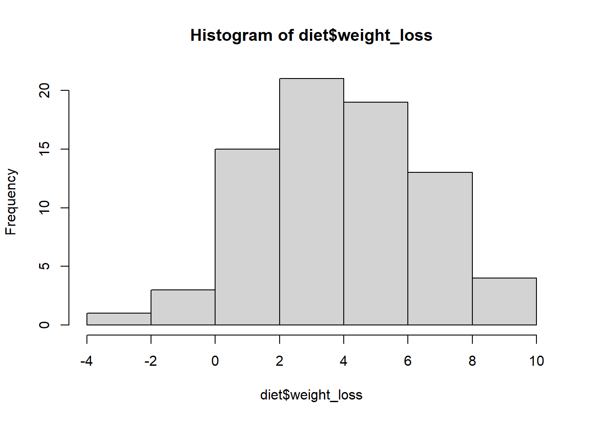
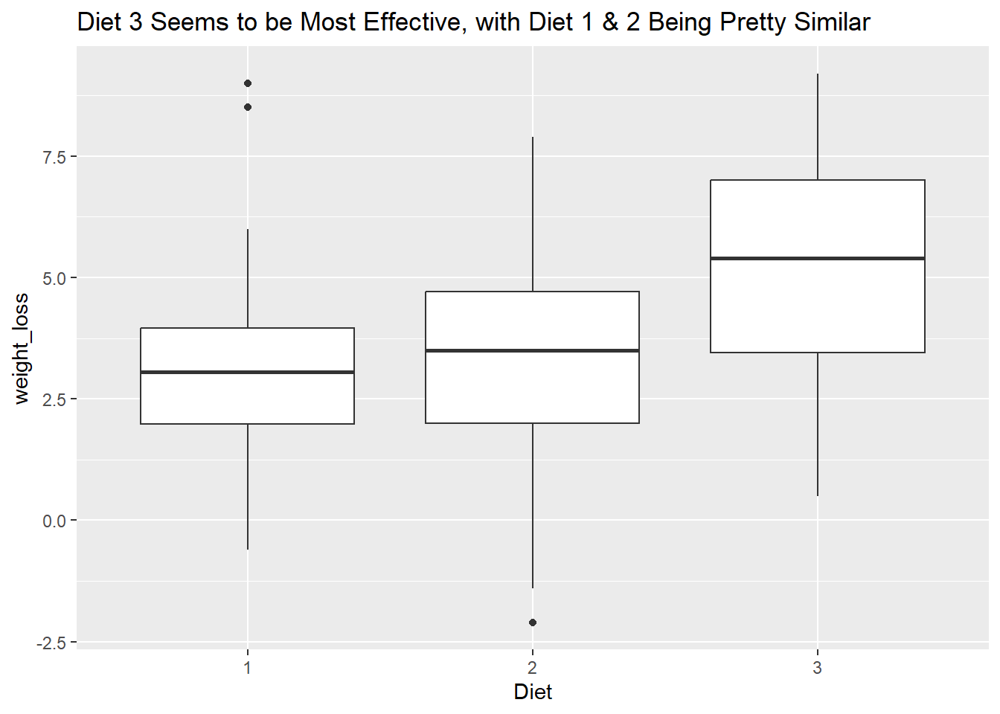
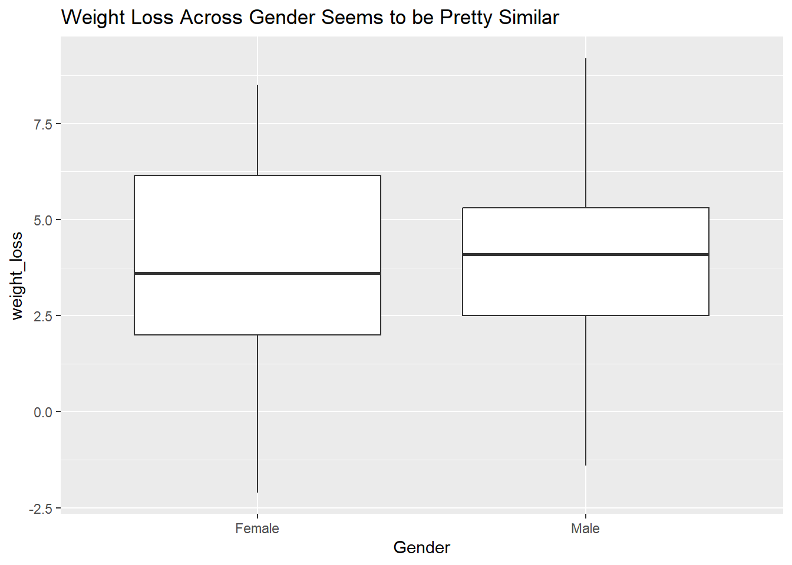
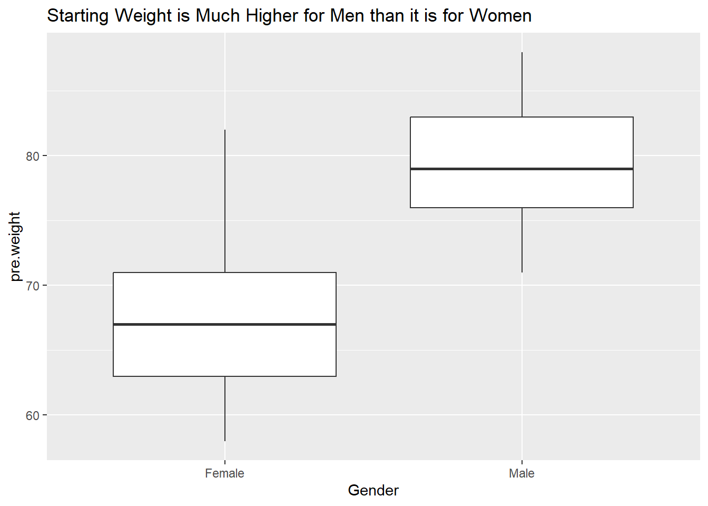

# load the data in here
library(readr)
library(tidyverse)
library(knitr)
diet <- read_csv("DietData.csv") %>%
mutate(weight_loss = pre.weight - weight6weeks,
Diet = as.factor(Diet),
Gender = ifelse(gender == "0",
"Female",
"Male"))Analysis of Variance
In Class Activity
Here is some new data to play with a bit to explore one-way and two-way analysis of variance models. These data represent weight data associated with three different diet types. There are 76 observations of individuals with the following characteristics:
- Gender (0/1)
- Age (earth years. 🤓)
- Height (cm)
- Pre.weight & weight6weeks (kg)
- Diet (1,2,3)
The data are located as a CSV file named DietData.csv linked from the Canvas page. Load the data in and format things so they look correctly to you.
Exploratory Data Anlsysis
One of the first things to do is to look at the data and see if there are any obvious things. Go ahead and explore these data visually. What do you see?
# Data visualization
hist(diet$weight_loss)
diet %>%
ggplot(aes(x = Diet,
y = weight_loss))+
geom_boxplot()+
labs(title = "Diet 3 Seems to be Most Effective, with Diet 1 & 2 Being Pretty Similar")
diet %>%
ggplot(aes(x = Gender,
y = weight_loss))+
geom_boxplot()+
labs(title = "Weight Loss Across Gender Seems to be Pretty Similar")
diet %>%
ggplot(aes(x = Gender,
y = pre.weight))+
geom_boxplot()+
labs(title = "Starting Weight is Much Higher for Men than it is for Women")
Estimating Mean Values
Make a table of Weight Loss by gender and diet.
# Table output
diet %>%
group_by(Diet, Gender) %>%
summarise(`Weight Loss` = mean(weight_loss)) %>%
kable()| Diet | Gender | Weight Loss |
|---|---|---|
| 1 | Female | 3.050000 |
| 1 | Male | 3.650000 |
| 2 | Female | 2.607143 |
| 2 | Male | 4.109091 |
| 3 | Female | 5.880000 |
| 3 | Male | 4.233333 |
1-Way Analysis of Variance
Diet Issues:
The underlying linear model.
\[ y_{ij} = \mu + \tau_{Diet, i} + \epsilon_j \]
Test the null hypothesis, \(H_O:\) There is no effect of diet on weight loss (e.g., \(\tau_{Diet-1} = \tau_{Diet-2} = \tau_{Diet-3} = 0.0\)). Is there evidence for one diet producing more weight loss than the others? Create an aov analysis and assign it to the variable fit.diet and examine its contents.
# Define model
fit.diet <- aov(weight_loss ~ Diet, data = diet)
anova(fit.diet)Analysis of Variance Table
Response: weight_loss
Df Sum Sq Mean Sq F value Pr(>F)
Diet 2 60.53 30.2635 5.3831 0.006596 **
Residuals 73 410.40 5.6219
---
Signif. codes: 0 '***' 0.001 '**' 0.01 '*' 0.05 '.' 0.1 ' ' 1# Because the p value is 0.006, we can reject the null hypothesis. This means that at least one of the diets has a significantly different mean weight loss than the others. Are they all significantly different? Try the TukeyHSD() Interpret the results.
# Posthoc test
TukeyHSD(fit.diet) Tukey multiple comparisons of means
95% family-wise confidence level
Fit: aov(formula = weight_loss ~ Diet, data = diet)
$Diet
diff lwr upr p adj
2-1 -0.032000 -1.6530850 1.589085 0.9987711
3-1 1.848148 0.2567422 3.439554 0.0188047
3-2 1.880148 0.3056826 3.454614 0.0152020#Diet 1 and diet 2 do not have significantly different means. However, diet 3 has a significantly higher mean than both diet 1 and diet 2.How much of the variation is explained? If you notice when you do a summary from a lm() (regression) model, it gives you the \(R^2\) values directly (remember \(R^2 = \frac{SS_{model}}{SS_{Error}}\)). Does summary() of your aov model give you that?
# How much variance?
summary(fit.diet) Df Sum Sq Mean Sq F value Pr(>F)
Diet 2 60.5 30.264 5.383 0.0066 **
Residuals 73 410.4 5.622
---
Signif. codes: 0 '***' 0.001 '**' 0.01 '*' 0.05 '.' 0.1 ' ' 1#The summary of the aov doesn't give us a r^2 value.Since I asked the question, the answer is probably no. Why does it not do this? Probably for historical reasons, which are a bit of a pain in the backside. That being said, there are some tidy ways to fix this issue. I’m going to use the broom package which allows us to clean up (or tidy if you will) the model objects. This will take the model object and pull out all the ANOVA table stuff and put it into a tibble.
library( broom )
# use your model fit next (I called mine fit.diet)
tidy_diet <- tidy( fit.diet )
tidy_diet# A tibble: 2 × 6
term df sumsq meansq statistic p.value
<chr> <dbl> <dbl> <dbl> <dbl> <dbl>
1 Diet 2 60.5 30.3 5.38 0.00660
2 Residuals 73 410. 5.62 NA NA Now, since it is all easily accessible, we can calculate the \(R^2\) from the new model output.
# Estimate the variance explained from the raw sums of squares
r2_Diet <- tidy_diet$sumsq[1] / sum( tidy_diet$sumsq )
r2_Diet [1] 0.1285269Gender:
The underlying linear model.
\(y_{ij} = \mu + \tau_{gender, i} + \epsilon_j\)
Independent of the diet, test the null hypothesis \(H_O:\) There is no difference in weight loss between genders (e.g., ${gender-0} = {gender-2} = 0.0 $). Is there evidence for one gender being significantly different than another? How much of the variation is explained (another \(R^2\) by gender)?
# partition effects
fit.gender <- aov(weight_loss ~ Gender, data = diet)
anova(fit.gender)Analysis of Variance Table
Response: weight_loss
Df Sum Sq Mean Sq F value Pr(>F)
Gender 1 0.28 0.2785 0.0438 0.8348
Residuals 74 470.65 6.3601 #There is not enough evidence (p = 0.83) to reject the null hypothesis that there is no difference in weight loss between genders.How do you interpret these results thus far?
Diet 3 seems to be the most effective diet for weight loss. Diet 1 and 2 are both similar in terms of weight loss. Gender does not seem to play a role in how much weight a person is going to lose.
Do genders respond differently to diets?
\(y_{ijk} = \mu + \tau_{Diet,i} + \tau_{gender,j} + \epsilon_k\)
So here we do something a bit different. We want to simultaneously ask the following questions:
- Do diets influence weight loss?
- Do genders influence weight loss?
- Is there an interaction where different genders respond differently to different diets?
In \(R\), this is done as:
# diet model
anova(fit.diet)Analysis of Variance Table
Response: weight_loss
Df Sum Sq Mean Sq F value Pr(>F)
Diet 2 60.53 30.2635 5.3831 0.006596 **
Residuals 73 410.40 5.6219
---
Signif. codes: 0 '***' 0.001 '**' 0.01 '*' 0.05 '.' 0.1 ' ' 1# gender model
anova(fit.gender)Analysis of Variance Table
Response: weight_loss
Df Sum Sq Mean Sq F value Pr(>F)
Gender 1 0.28 0.2785 0.0438 0.8348
Residuals 74 470.65 6.3601 # interaction model
fit.both <- aov(weight_loss ~ Diet + Gender + Diet * Gender,
data = diet)
anova(fit.both)Analysis of Variance Table
Response: weight_loss
Df Sum Sq Mean Sq F value Pr(>F)
Diet 2 60.53 30.2635 5.6292 0.005408 **
Gender 1 0.17 0.1687 0.0314 0.859910
Diet:Gender 2 33.90 16.9520 3.1532 0.048842 *
Residuals 70 376.33 5.3761
---
Signif. codes: 0 '***' 0.001 '**' 0.01 '*' 0.05 '.' 0.1 ' ' 1tidy_both <- tidy(fit.both)
tidy_both# A tibble: 4 × 6
term df sumsq meansq statistic p.value
<chr> <dbl> <dbl> <dbl> <dbl> <dbl>
1 Diet 2 60.5 30.3 5.63 0.00541
2 Gender 1 0.169 0.169 0.0314 0.860
3 Diet:Gender 2 33.9 17.0 3.15 0.0488
4 Residuals 70 376. 5.38 NA NA r2_both <- tidy_both$sumsq[1] / sum(tidy_both$sumsq)
r2_both[1] 0.1285269What is the \(R^2\) for this model?
0.129
# best model variance explained
data.frame(model = c("Diet", "Gender", "Both"),
AIC = c(AIC(fit.diet), AIC(fit.gender), AIC(fit.both))) model AIC
1 Diet 351.8453
2 Gender 360.2557
3 Both 351.2582Which Model is Best?
How would you compare the models you generated? How do you interpret the findings?
Based on the AIC, there isn’t one best model, but two. The two best models are the relationship between diet type and weight loss as well as the relationship between the interactions between diet type and gender and weight loss. The model only based on Diet type has a p value of 0.007, so we can conclude that at least one of the diets produces a different mean weight loss value. Because of the post-hoc test, we know that diet 3 produces a significantly higher weight loss than the other two diets. The interaction model produces significant p values for the diet term alone (p = 0.005) and for the interaction term (p = 0.05), but not for gender alone (p = 0.86).